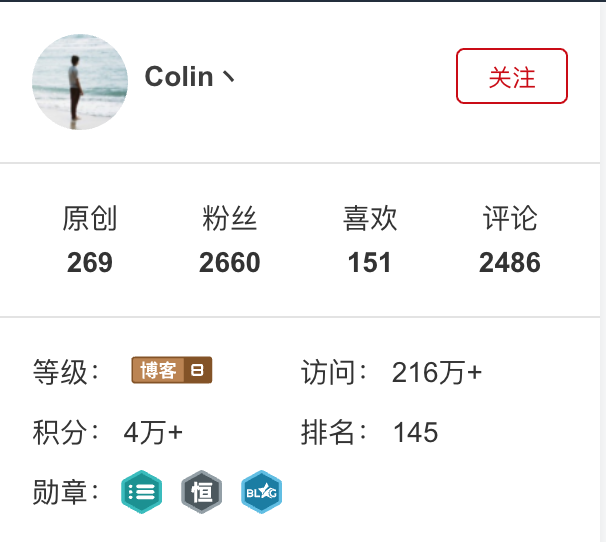

今天看到了一个人的博客，感触真TM大！！！
首先我是谷歌一个IOS问题偶然间发现他的博客的，文章写的很好，完美的解决了我的问题。但是，关网页的时候瞟到了他的资料：他居然是94年的！！！比我小了将近一年！！！
然后又看到了这个：

我简直不能淡定了！！！一个还在读大学的人居然可以发200多篇原创博客！！而且访问量居然有二百多万次！！！还是在CSDN上！！！
我之前从来没有想过人与人之间差距会那么大。
当我高考完拿到软件学院的录取通知书的时候，我就暗想自己四年之后也可以成为顶级电脑高手，随随便便在别人电脑里面翻照片。
然而仔细想想自己大一大二完全是在混日子，基本上什么都没学，而大一大二的课又那么的重要，数学、算法、数据结构、编译原理，数据库等等我什么都没学好，看看成绩就知道了，跟没学似的……以至于我现在要花时间去恶补这些科目。可能有一部分环境原因，但其实大部分都是怪我自己，怪自己对这个方向缺乏一个整体的认识，没有一个良好的职业规划，以至于自己两年来毫无目标，也不知道要干什么。
到了大三，一次偶然的机会被师兄拉过去做外包。我被分到跟舍友一起做IOS端的一个APP，而我那个时候完全不懂IOS，啥也没做过。师兄让我跟着舍友一起做。但是不久后拿个舍友表示自己没时间不做了，我就挑起了做APP的大梁。由于不会就只好从头开始学。当时是跟着网易公开课上斯坦福大学的Paul Hegarty学的，IOS7开发，老头讲的很好。但是我只挑着其中一部分课程看了下，然后自己百度了一部分东西就开始写那个APP了。每天晚上都写到1、2点钟。然后在学期末终于写出了个巨恶心的APP，放到了91市场上，拿了2000块钱。然后一次偶然的机会，学院组织的一次app比赛上面用这个东西去参赛还获得了三等奖（吐槽一句，两个学期了，比赛奖金到现在都没发……什么破学院）。
当时我已经相当满足，认为自己几乎是世界上最勤奋的人了，每天花如此多时间如此多精力来做这件事，还拿着笔钱请爸妈吃了顿饭，屁股翘到了天上。其实现在想想，我之所以有这种想法完全是大一大二不良的学习习惯给我造成的错觉！！一个连App Store都没放上去到应用有什么了不起的啊，当时还当宝贝一样满世界去炫耀……当时脑子真是进水了。
到了大三下学期。由于那次学院比赛是一个创业公司赞助的，我就被拉到了这个创业公司当实习生。创业公司嘛，自然没什么老员工，老板是北大光华管理毕业的，对软件开发一窍不通。所谓实习就是他“大概想个东西”，然后我们把他实现。没有需求文档，没有架构设计。甚至到了最后快完成的时候还在往里面加界面。当然，也是来了这个公司之后我才发现自己对于IOS开发其实一窍不通，要学的东西还有很多，然后自己边写APP边学了一些东西。感觉那段时间学的东西比大一大二加起来的还要多好多倍。也是那段时间才知道自己在编程方面欠的债有多少。
那段时间腾讯、华为，阿里巴巴等大企业开始招实习生，我却自以为找到了实习连面试都没报名。其实如果我那怕报名参加了一家企业的面试，我都会知道自己到底有多差，都会被狠狠的删几个耳光，然后加倍努力的学习。但是我没有。虽然学到了很多，但是大三下学期依然是在轻松愉快中度过的，后悔已经来不及。
现在是大三到大四的暑假，而这个暑假已经过去了一半，我感觉自己依然过的浑浑噩噩，一拿起书就犯困，一写代码就想去刷微博，虽然有在学东西，但是毫无效率可言。但是我感觉我有一天一天的在改变，每天都尝试更加专注一点，每天睡觉前都反思下自己。
虽然，大学毕业前想要达到当初的期望几乎是不可能的了，
但是我会更加努力去接近那个目标！！